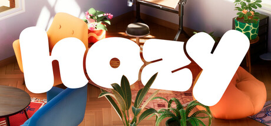
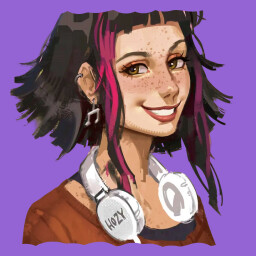
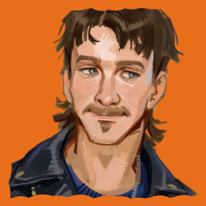

Hozy 参考风格

Reference
Hozy — Steam Header
柔和室内 3D、暖色漫射光、低饱和马卡龙色调、圆角家具形体。

Reference
Hozy — 小公寓截图
Study: 软环境光、细腻 AO、砖墙/木地板材质细节、无硬阴影。

Reference
Hozy — 工坊截图
Study: 温暖侧光、做旧工具质感、空间层次感。
方向目标：
不复制 Hozy 的室内装修玩法，只借鉴其视觉语言：欧式建筑碎片作为遗迹竞技场材料，柔软圆润的 3D 风格替代深空遗迹的硬边锋利感，暖色调主导。怪物设计转向"误入战场的可爱生物"而非威胁感怪兽。
原创概念图
 Concept · v2
Hozy 风格竞技场 v2 — 欧式浮岛废墟
赤陶砖墙、拱门、围栏、露台地板，漂浮于云层之上。五种可爱怪物：根系木头生物、龟壳镜面生物、岩浆裂缝生物、紫环浮空生物、提灯苔藓生物。软渲染暖光，HUD 融入建筑石框元素。
Concept · v2
Hozy 风格竞技场 v2 — 欧式浮岛废墟
赤陶砖墙、拱门、围栏、露台地板，漂浮于云层之上。五种可爱怪物：根系木头生物、龟壳镜面生物、岩浆裂缝生物、紫环浮空生物、提灯苔藓生物。软渲染暖光，HUD 融入建筑石框元素。
 Concept · v1
Hozy 风格竞技场 v1 — 木地板蜡烛版
初代尝试：暖木地板、石柱、布艺靠垫障碍物。风格正确但过于扁平，v2 已改善立体感和建筑细节。
Concept · v1
Hozy 风格竞技场 v1 — 木地板蜡烛版
初代尝试：暖木地板、石柱、布艺靠垫障碍物。风格正确但过于扁平，v2 已改善立体感和建筑细节。
下一步方向：
可在 v2 基础上继续迭代：① 加入更多建筑层次（阶梯、断桥、悬挂铁链）；② ✅ 怪物单体设计表已完成；③ ✅ HUD 专项图已完成；④ 可出竞技场日景/黄昏光版本，或更多怪物变体。
怪物设计表
 Concept · v1
Hozy 风格怪物设计表 v1
六只可爱生物：苔藓树根生物、龟壳镜面生物、熔岩裂缝石像鬼、紫环水母、提灯苔藓生物、云朵兔。暖奶油羊皮纸底、赤陶砖边框，圆润无硬阴影软渲染。
Concept · v1
Hozy 风格怪物设计表 v1
六只可爱生物：苔藓树根生物、龟壳镜面生物、熔岩裂缝石像鬼、紫环水母、提灯苔藓生物、云朵兔。暖奶油羊皮纸底、赤陶砖边框，圆润无硬阴影软渲染。
HUD / UI 概念图
 Concept · v1
Hozy 风格 HUD 概念图 v1
石拱框血量条、石刻勋章遗物计数、圆石板技能按钮、做旧木牌分数显示、罗马数字石碑波次计数、石质罗盘小地图。暖琥珀烛光点亮交互元素，欧式家具感界面风格。
Concept · v1
Hozy 风格 HUD 概念图 v1
石拱框血量条、石刻勋章遗物计数、圆石板技能按钮、做旧木牌分数显示、罗马数字石碑波次计数、石质罗盘小地图。暖琥珀烛光点亮交互元素，欧式家具感界面风格。